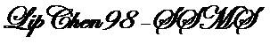

Your Website
LIPCHEN98 Specialty Chemical Consultant
(LIPCHEN98 特殊化工咨询顾问公司）
About Me
I'm Ping Li, a retired chemist with over 40 years of experience in analytical chemistry.
Application Example: ABDNAZ
You can view or download the ppt file by clicking the link below:
Download the ABDNAZ ppt file
Experts on Applications Examples.
Read more
© 2024 Ping Li. All rights reserved.